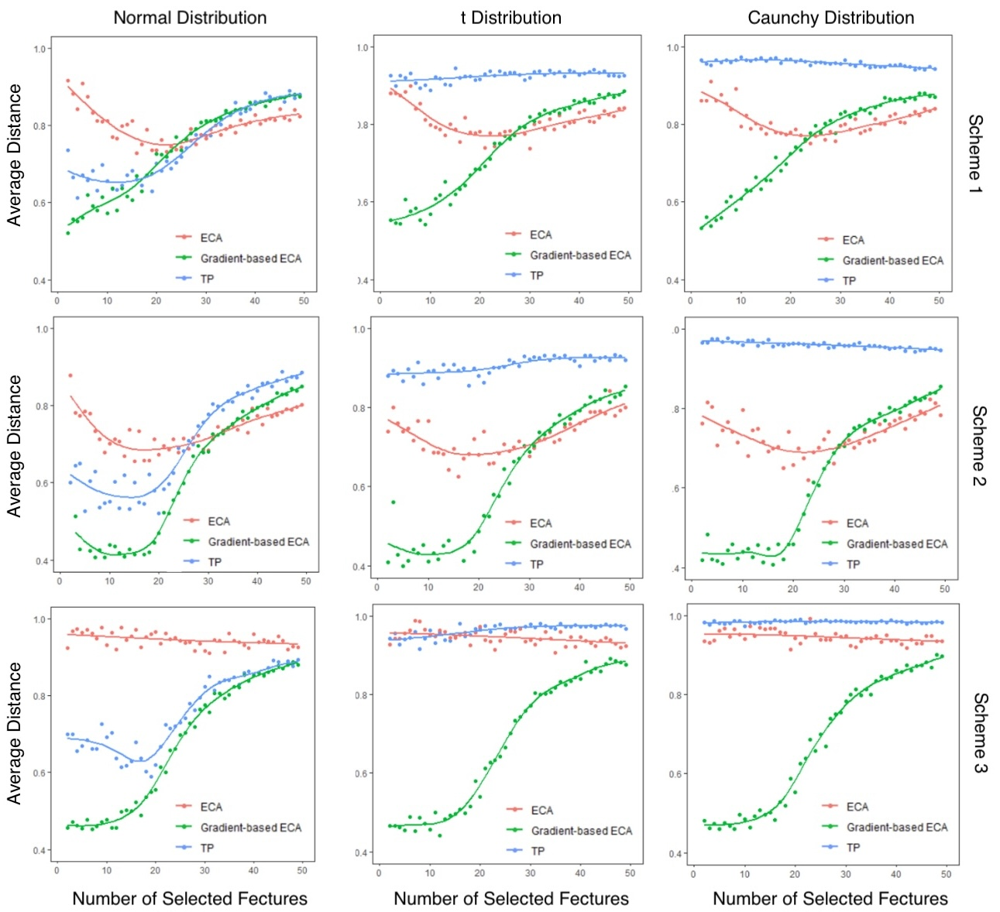

Welcome! I am currently pursuing a Master's in Computational and Applied Mathematics at the University of Chicago. I am broadly interested in Stochastic Control and Dynamic Programming, Statistical Learning, and High-dimensional Statistics. Currently, I am working with Prof. John R. Birge and Prof. Mihai Anitescu on developing a sequential sampling approach for multi-stage dynamic programming in risk-sensitive dynamic asset allocation. Previously, I earned a Bachelor's degree in Statistics from Jiangxi University of Finance and Economics, where I focused on Sparse PCA for elliptical distributions and community detection in networks using the R software package, under the supervision of Professor Chuanquan Li.
Research Experience
Multi-period Dynamic Asset Allocation via Sequential Sampling
Research Advisors: John R. Birge, Mihai Anitescu
Abstract:
We propose a a simulation-based approach to dynamic multi-period portfolio choice with Predictable Returns and Transaction Costs. To compute the optimal policy, we rely on an equivalence between sampling from a high dimensional joint distribution defined on states and controls with goal of minimizing the expected cost function. We illustrate the efficiency of our approach relative to direct Monte Carlo methods.
Keywords: Multi-period Dynamic Programming/ Monte Carlo Method/ Risk-sensitive Control
Gradient-based Sparse Elliptical Component Analysis
Research Advisor: Chuanquan Li
Abstract:
Principal component analysis (PCA) is a very important multivariate statistical and machine learning method, but traditional PCA and its related sparse methods require data to follow a Gaussian distribution. A Gradient-based Elliptical Component Analysis (ECA) method based on gradient projection is proposed for common thick-tailed elliptical distributions. This method replaces the traditional covariance matrix with a multivariate Kendall’s tau matrix, and combines the Fantope projection and selection gradient method (FPS) with the truncated power method via a combinatoric program. It is applied to data that satisfies the ellipsoidal distribution and can be extended to sparse high-dimensional data. The experimental results show that the estimation results of Gradient-based ECA on non-Gaussian elliptical distributions are significantly improved compared to traditional methods; In addition, the estimation results of Gradient-based ECA on Gaussian distribution have also been improved to some extent, indicating that sparse data conforms to Gaussian distribution, Gradient-based ECA can also serve as a high-quality alternative model for sparse PCA methods.
Keywords: Elliptical Distributions/ Multivariate Kendall’s tau Matrix/ Fantope projection and selection gradient method
Community Detection on Dynamic R Packages Network
Research Advisor: Chuanquan Li
Abstract:
As an important open source software in the field of statistics, R language has a long history of development and a relatively mature ecosystem. This paper explores the core components and dependencies of R language packages from the perspective of complex directed networks, divides the dependency networks between packages, and conducts an in-depth study of their developmental lineage, so that R language developers and users can quickly understand R language. Our study shows that the dependency relationships among the R packages obey the power-law distribution and “small-world” phenomenon; the dependency network of R packages includes five subcommunities “Statistical Modeling”, “High-Performance Computing”, “Data Visualization”, “Web technologies”, “Bioinformatics”. In summary, this paper has found the following: The R language ecosystem meets the needs of the entire data analysis process, scales with the times, attracts developers from all over the world, and focuses on the long-term maintenance of the package's health. Finally, the paper explores the open source model of R language to explore the implications for domestic open source software and its ecosystem.
Keywords: Open source software / ecosystem / R language / dependency network / community detection


Work Experience
Zhejiang AI Healthcare Innovation Center
July 2022 - Sept. 2022
Intern of Algorithm Team
- Involved in a project predicting diseases that young people may suffer from.
- Tested models (i.e., the Cox model, the multi-factor model, and the Fine Gray competitive risk model) based on the data stored in the Navicat database extracted by SQL.
- Collaborated with colleagues on writing and filing a patent for review.
Zhejiang AI Healthcare Innovation Center
Aug. 2021 - Sept. 2021
Intern of Algorithm Team
- Assisted in optimizing the algorithm for patient scheduling among hospital departments and writing up patent descriptions about medical big data.
- Used different algorithms to compute local optimal solutions and compared with true values.